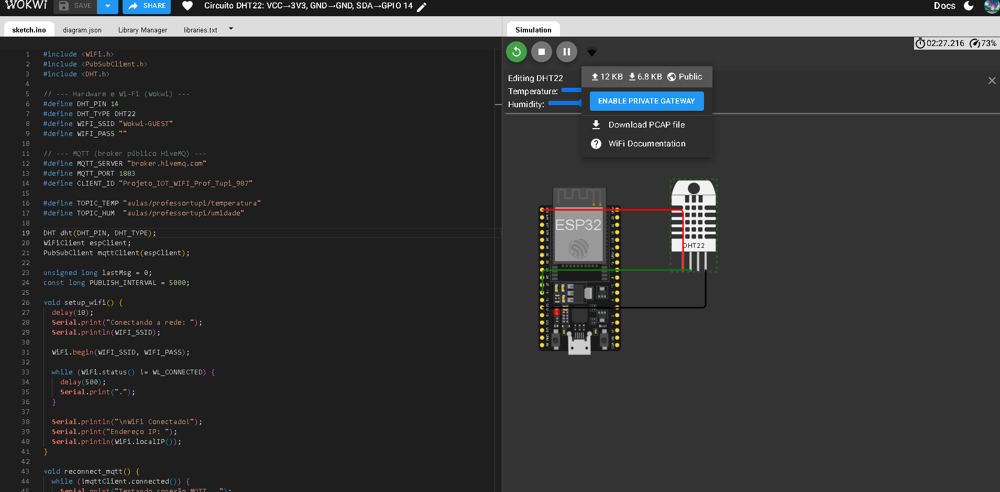
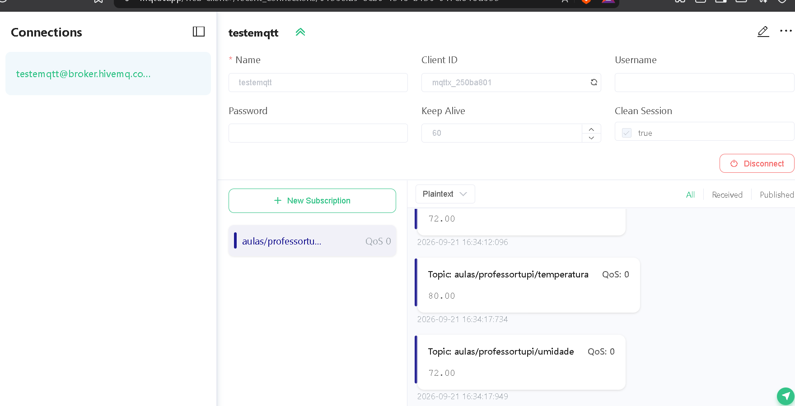

Aluno: Thales T | Data: 21/09/2026
Simular ESP32 + DHT22 no Wokwi, publicar temperatura e umidade no broker público HiveMQ e visualizar as mensagens no MQTTX Web.
broker.hivemq.com1883wss://broker.hivemq.com:8884/mqtttestemqtt, SSL On, Path /mqttaulas/professortupi/#Wokwi-GUEST (sem senha)
| Tópico | Exemplo (MQTTX) |
|---|---|
aulas/professortupi/temperatura | 80.00 |
aulas/professortupi/umidade | 72.00 |
STATUS: PASS — mensagens recebidas em tempo real no MQTTX.

Arquivo anexo: sketch.ino (PubSubClient + DHT22, intervalo 5s).
Bibliotecas: PubSubClient, DHT sensor library, Adafruit Unified Sensor.
A prova principal do item “como visualizar as publicações no broker” é o MQTTX Connected + mensagens nos tópicos da aula. O Serial Monitor do Wokwi às vezes fica oculto/colapsado na UI; o fluxo ponta a ponta foi validado pelo MQTTX.